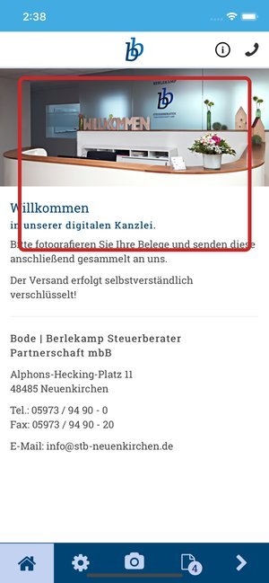
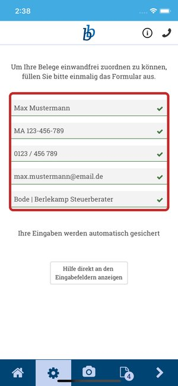
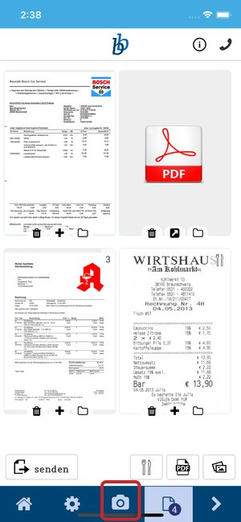
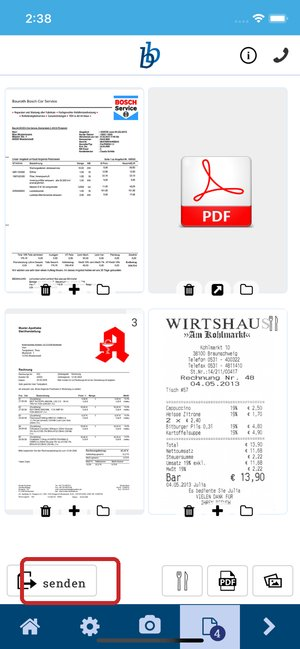
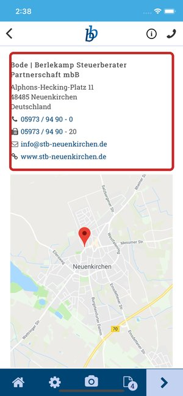

Belege per App, Unterlagen über die Belegzentrale.
Mit unserer App „Meine Steuern“ und der Belegzentrale bieten wir unseren Mandanten eine sichere und unkomplizierte Bearbeitung ihrer Steuer- und Buchführungsunterlagen. Vertrauliche Unterlagen gehen nur über diese Wege, nicht per Kontaktformular.
App „Meine Steuern“
Belege, Dokumente und andere Schriftstücke fotografieren und mit einem Klick an uns senden. Kostenlos, für Android und iPhone.
So geht es, Schritt für Schritt
App laden und öffnen
Über die beiden Knöpfe auf dieser Seite im App Store oder bei Google Play laden und öffnen. Die App begrüßt Sie mit unserem Empfang.

Beispielansicht Einmal einrichten
Unten auf das Zahnrad tippen und das kurze Formular einmal ausfüllen. So können wir Ihre Belege einwandfrei zuordnen. Ihre Eingaben werden automatisch gesichert.

Beispielansicht Beleg fotografieren
Unten auf das Kamera-Symbol tippen und den Beleg abfotografieren, gern mehrere nacheinander. Die Belege sammeln sich in der Übersicht.

Beispielansicht Senden
Auf „senden“ tippen. Die Belege gehen verschlüsselt an uns. Fertig, kein Belegesammeln am Jahresende.

Beispielansicht Fragen? Direkt aus der App anrufen
Über das Hörer-Symbol oben rechts oder den Bereich „Kontakt“ erreichen Sie uns mit einem Tipp.

Beispielansicht
Beispielansichten: offizielle Screenshots der App „Steuerberater Bode-Berlekamp“ (dimento.com gmbh) aus dem Apple App Store, Stand 29.10.2026, mit Musterdaten; wichtige Stellen rot markiert.
Belegzentrale
Sobald Sie Ihre Zugangsdaten von uns haben, loggen Sie sich über unsere Website ein, tauschen Unterlagen direkt mit uns aus und erhalten ein kostenloses digitales Belegarchiv.
Seit dem Veranlagungszeitraum 2017 müssen Belege nicht mehr eingereicht, sondern vorgehalten werden. Wir speichern Ihre digitalen Belege und übernehmen den digitalen Belegaustausch mit der Finanzverwaltung.
Entwurf: Die Login-Adresse wird beim Bau der fertigen Seite eingetragen.
Fernwartung per TeamViewer
Sie brauchen Hilfe an Ihrem Rechner? Wir verbinden uns per TeamViewer direkt mit Ihrer Buchhaltung. Die Verbindung starten Sie selbst, wir sehen nur, was Sie freigeben.
QuickSupport laden
Auf teamviewer.com/de/download „QuickSupport herunterladen“ wählen. Das kleine Programm läuft ohne Installation.
Starten und uns anrufen
Die Datei öffnen. Es erscheinen „Ihre ID“ und ein Kennwort. Rufen Sie uns an: 05973 94 90-0.
ID und Kennwort nennen
Wir verbinden uns, Sie sehen alles mit. Nach dem Termin schließen Sie das Programm, damit endet die Verbindung.
Bezeichnungen nach der Download-Seite von TeamViewer (teamviewer.com, Stand 29.10.2026).
Formulare
- Antrag auf Steuerklassenwechsel bei Ehegatten/Lebenspartnern
- Antrag auf Befreiung von der Rentenversicherungspflicht bei geringfügiger Beschäftigung
- Muster Arbeitsvertrag
- Muster Arbeitsvertrag Teilzeit
- Personalfragebogen
Entwurf: Die Dateien werden beim Bau der fertigen Seite von der bisherigen Website übernommen.
Noch eine Frage?
Telefon oder E-Mail genügt, wir melden uns zu den Öffnungszeiten. Vertrauliche Unterlagen bitte über die App oder die Belegzentrale.
Oder direkt: 05973 94 90-0
info@stb-neuenkirchen.de